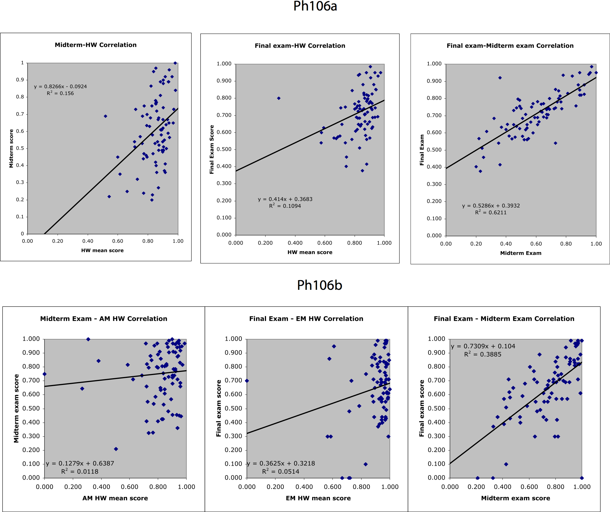

Overview
The Ph125abc sequence covers quantum
mechanics
at a level of sophistication beyond the introductory Ph 2/12
sequence. You will see much material that is familiar to you from
these courses; but, in Ph125abc, you will truly learn to attack basic
quantum problems from scratch and arrive at
full solutions that can be tested by experiment. We will also
explore some of the interesting and unusual implications of quantum
mechanics.
It is impossible to emphasize how important the core physics courses
Ph106 and
Ph125 are: these teach you the basic frameworks and techniques that you
must know to do any physics.
Ph125ab will cover the basic techniques and results of quantum
mechanics along with a small selection of special topics.
Ph125c will cover additional techniques and applications and will be
taught by
Prof. Wise.
Quick Links
Vital Information
Location:
107 Downs
Time: MWF 10:00 am -
11:00 am
Instructor: Prof. Sunil
Golwala, 311 Downs, Mail Code 59-33, golwala at caltech.edu
Teaching Assistants:
Denis Bashkirov, denisb at caltech.edu
Kevin Engel, kte at caltech.edu
Marcus Teague, mlteague at caltech.edu
Please contact the TAs directly if you would like to make appointments
outside of normal office hours.
Office Hours and Contact Information:
Prof. Golwala: M 6-8
pm, 107 Downs.
Additional
office hours can be arranged by
appointment or by popular
demand.
If
you need to contact me outside of office hours, please try email
first. I am happy to arrange meetings outside of normal
office
hours, but I am not always available on the spur of the moment.
Please
include "Ph125" in the subject line of your email -- I get a
lot of email, and I want to make sure I see your emails quickly.
TAs:
Su 7-9 pm, location SFL room 2-1.
The TAs will rotate through these office hours.
Recitation:
F 4-5 pm, 107 Downs, usually run by Golwala.
Feedback:
I greatly appreciate student
feedback; feedback prior to the end-of-term evaluations lets me modify
the class to fit your needs. In
person, by email, by campus mail, whatever you like. If you would
like
to preserve your anonymity, campus mail will usually work. I have
mailboxes on the 3rd floor of Downs near my office and in 61 W.
Bridge.
You will also be able to provide feedback via the new Moodle page being
used for this course (details
below).
Unfortunately, this feedback is not anonymous, so please use one of the
above means if you desire anonymity.
Textbook(s)
- Required: Principles of Quantum Mechanics,
Shankar, available at the bookstore.
- Optional (on 3-hr reserve
at Fairchild Library):
Use these optional texts for alternate explanations or for
additional
problems or examples. The basic material is always the same, but
different authors have different approaches. Find a text you
like; different students learn in different ways --
internalizing your own understanding of the material is key to becoming
expert in it, so you should follow the approach that best gets you
there.
- Comparable to this course
- Griffiths, Introduction to
Quantum Mechanics, not quite as advanced as this course.
- Cohen-Tannjoudji et al., Quantum
Mechanics, similar to this course, but very axiomatic and long
-- I prefer Shankar.
- Gasioriowicz, Quantum
Physics, a good book -- I used this as an undergrad and was
fairly happy with it. A bit less rigorous than I like, which is
why I am using Shankar.
- Liboff, Introductory
Quantum Mechanics, a good book at the right level, but the
typesetting is so similar to the most recent edition of Goldstein as to
cause unnecessary mental trauma.
- Merzbacher, Quantum
Mechanics, a classic, writing and text style is also "classic"
(dense text, not very many exercises)
- Messiah, Quantum Mechanics,
c.f. Merzbacher
- Schiff, Quantum Mechanics,
c.f. Merzbacher
- More advanced than this course
- Landau and Lifshitz, Quantum
Mechanics, similar material to this course, very terse.
- Sakurai, Modern Quantum
Mechanics: largely the same material as this course, but
probably too terse for the first time through.
- Sakurai, Advanced Quantum
Mechanics: covers second quantization and relativisitic
QM. Only for certified quantum mechanics.
- Special topics (self-explanatory)
- Weissbluth, Atoms and Molecules
- Lecture Notes:
2007/2008 lecture notes: pdf
2008/2009 lecture notes (updated following each lecture, see course Moodle page for details): pdf
My lecture notes in general follow Shankar and are primarily
intended as a distillation for my personal use. It will appear in
class that I am working directly from them because I am -- that's why
they're called lecture notes! My goals in making them available
to you
are:
- To provide clarification of points in Shankar that I thought
deserved more or alternate explanation.
- To present additional explanation or material
derived from other texts; the references will be provided in the
notes.
- To get all the algebra down on the page, correctly, so that I
don't get bogged down on the board and so that you don't have to
transcribe everything that I write.
I only provide the notes in electronic pdf form, available above and on
the
course Moodle page.
Corrected
versions will be posted there, too. The lectures are also broken
out separately in the syllabus on the course Moodle page,
with individual lecture
update dates. I provide last year's notes above and there also.
I do not consider myself
responsible for providing updated copies of the lecture notes well
ahead of class time -- they are being revised as the course is being
given. They will be posted promptly after class. You are
welcome to review last year's notes ahead of time, though there will be
changes and improvements. I suggest
that you spend your time in class
following the lecture at a conceptual level and noting down for
yourself points or derivations that were not clear to you; when you
review the posted notes, you may find your questions
answered. If not, you are welcome to ask for clarification.
Of course, it is true that the lecture notes may relieve you of the
obligation of coming to lecture. I won't claim that there is much
said in class that is not in the notes. It's your choice.
Some students benefit from being able to receive information aurally
and to interact during that process; others prefer to read it off the
page. Whatever works for you. Grades are based only on the
written work you hand back.
But please do not delude yourself into thinking that, because the
lecture notes are available, you can just skim through it all on
the day before a problem set or exam is due and expect to immediately
become expert. Learning requires time to mull over concepts in
your mind, for your subconscious to work on ideas and problems.
If you choose not to come to class, please be disciplined about keeping
up with the material in your own study time.
Lecture Strategy
I will not cover in lecture every bit
of material
you will be responsible for. There are some topics that are
really better covered by reading than by lecture, and some topics that
are simple enough that they are a waste of lecture time. I can
use the leftover time to do more examples.
Problem Set Policies
The best way to learn physics is by
doing problems. In addition to the regular problem sets, I list
below some links to other sources of
problems, some with solutions -- doing problems is the best way to
learn.
All these policies are
subject to change when Prof. Wise takes over for Ph125c.
- Problem sets will be posted on the course Moodle page,
linked
to the syllabus, usually 1
week before they are due.
- Due date: Tuesday 4 pm at the
box outside my office. No
mercy will be granted
on the due date and time. Remember,
we give partial credit, so the last 10 minutes of work will not make
much difference.
- Electronic Submission:
Electronic submission of problem sets (email or fax) is only allowed if
you obtain prior approval from
the instructor. Electronic submission only creates work for the
instructor and TAs because the problem set still needs to be printed
out for grading. Any reasonable justification will be accepted,
reasonable meaning that you will be, for some well-defined reason,
off-campus and unable to turn in the set physically.
- Late policy: Problem sets will be accepted up to 1 week late at
the due date for the following week's set for
50% credit, and after that not
at all. You may turn in part on-time and part late. Please note on the problem set if it is
being split this way. You do not need to contact me or
the TAs
to turn in a problem set late at 50% credit, or to turn in part on-time
and part late.
- Extensions:
- You may take one
full-credit one-week extension per term. No need to contact us,
just write it on your problem set.
- Otherwise, extensions will be granted for good
reasons -- physical or mental health issues, family emergency,
etc. You must contact me or one of
the TAs before the homework is
due and you must provide some sort of proof (e.g., note from resident
head, health center, counseling center, or Barbara Green). A
heavy amount of other
coursework is not
sufficient reason for an extension (though you may use your free
extension in such circumstances -- so save it until you really need
it!).
- Solution sets will be also be posted on the course Moodle page when the homework
sets are
due (usually late the same night or the following morning). If
you turn in the problem set late, you may not look at the
solutions until you have turned in your problem set.
- Graded problem sets will be available
roughly 10 days after they are
due, outside my office. You
should keep a copy of your homework sets so you can review them with
the solutions promptly after the set is due.
In spite of my best efforts, sometimes I make mistakes in assigning
problems; perhaps not providing enough information, or giving a problem
that results in an algebra nightmare. I will post corrections via
the
Moodle page and will
also send broadcast emails to the
class. If you are having trouble with a problem, be
sure to check to see if a correction has been posted, and
feel free to contact me if you think a problem has errors in it or
seems overly difficult.
Grading
The course grade will be one-third
homework
sets, one-third midterm, and one-third final.
Collaboration is permitted on
homework sets, but each
student's
solution must be the result of his or her own understanding of the
material. No manual xeroxing is allowed. See below for some
comments on working in groups.
Use of mathematical software like Mathematica is allowed, but will not
be available for exams. Prof. Mabuchi made a very good point when
he taught Ph125:
It is absolutely
essential that you develop a strong intuition for basic calculations
involving linear algebra, differential equations, and the like.
The only way to develop this intuition is by working lots of problems
by hand; skipping this phase of your education is a really bad idea.
Be careful how you use such packages.
The midterm and
final are
not collaborative, though you are welcome to consult your own notes
(both in-class and any additional notes you take), Shankar, and my
lecture notes (including typo corrections). You
may not use other textbooks,
the web, any other resources, or any software of any kind.
Grade
Distributions and Anonymously Listed Grades
Histograms
of grades for the problem
sets to date
can be found
here
(updated 2009/03/25, through final exam).
You can
check that we have the correct grades recorded for you
here
(updated 2009/03/25 through final exam).
Grades
can still be corrected even after they have been turned in.
Please let me know if you find any errors.
Using Moodle Page
This year we are trying out Moodle,
course software used by many institutions. You can log on to
Moodle at
https://courses.caltech.edu
A password for the Ph125a page will be provided in class; you can also
obtain it from your classmates, the TAs, or myself. All course
logistics and assignments will be announced via the Moodle page.
You will find a listing of the course syllabus, problem sets, and
solutions there. There is also a weekly homework survey. It
would be very beneficial (to me and you) if you could fill out the
survey regularly. Especially important is the ``News Forum'', via which
I will make course announcements that I believe you will receive
automatically via email once you have logged in to the course
page. This is the first time Moodle is in widespread use at
Caltech, and the first time I am using it, so please bear with me as I
figure it out.
Practice Problems
Comment on Working in Groups:
It is in general a good thing to work
with other students while reading and doing problem sets. You get
to hear different perspectives on the material and frequently your
peers can help you get past obstacles to understanding.
However, you must use group
work carefully. If you rely on your colleagues too much, or take
a very long time to do the homework sets, you will do poorly in the
fixed-time, independent exam environment. Empirically, we observe
that students with good exam scores tend to also have done well on
homework, but that good homework scores do not predict good exam
scores. Exam scores correlate from exam to exam, even on largely
independent material. For example, scores from 2004-2005 Ph106ab:

Notice, in particular,
the midterm-final correlation for Ph106b, which is remarkable because
the
exams covered totally disjoint material (mechanics vs. E&M) and
were written by two different instructors.
To avoid suffering from this problem, I have two suggestions:
- Talk to your peers, in particular peers outside of your usual
workgroup, to find out how long they are spending on problem
sets. If you find you are spending much more time, figure out
why! Do you need to spend more time understanding the material
before diving in to problem sets? Do you jump to an incorrect
solution method too quickly? Are you getting bogged down in
algebra? Consult me or the TAs too.
- While working in groups can be helpful, you have to be careful to
remain sufficiently independent that you can solve problems on your
own! My suggestion is to go over the material and examples in
groups, but try to work the problems by yourself, using help from
others as a last resort. If you find yourself helping one of your
peers, don't just explain how to do the problem; try to help him find
his way to the solution himself.
This is not just an arbitrary classroom
exercise. In research, one is always under schedule pressure --
because one only has a fixed number of nights at an observatory,
because there are funding deadlines, because there are competing groups
doing similar work. It is critical to learn how to cut through
irrelevant or unimportant information and get to results in a timely
fashion.